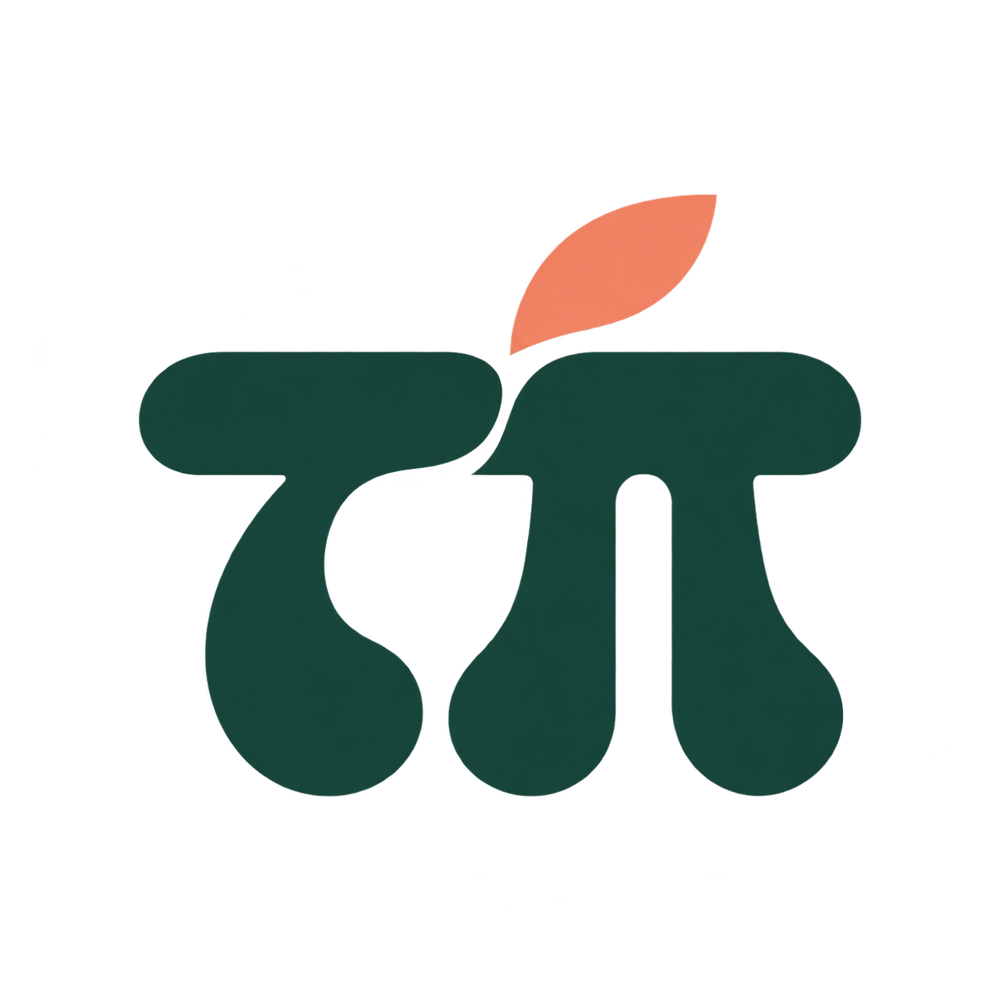
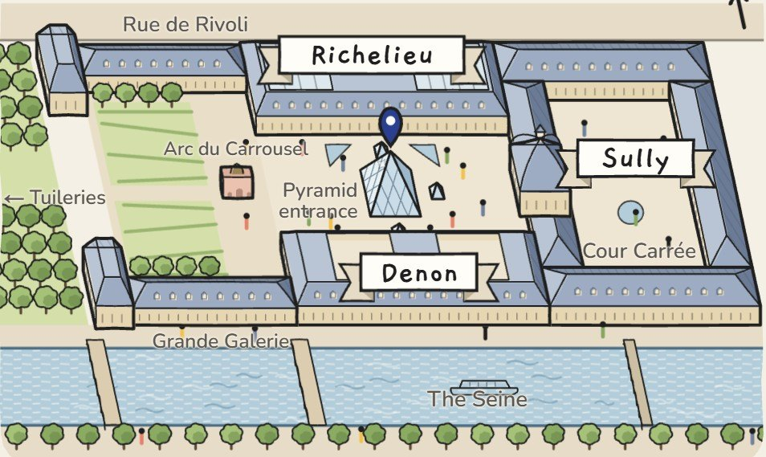
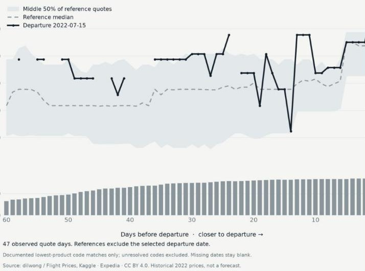
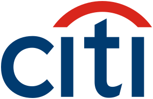

Amazon美国 · 学生实习
软件开发工程师实习
实际用过 AI 辅助开发工具。
Experience using AI-assisted development tools in academic or professional settings查看原岗位 
桃派工作室预约免费咨询为什么现在值得做？
01 提高求职竞争力
一些企业已经把 AI 实践写进岗位要求。亲手做过，简历和面试里才有具体的经历可讲。
Experience using AI-assisted development tools in academic or professional settings查看原岗位 招人的人怎么说
Felix RiesebergAnthropic 工程经理 · 2026 年 10 月个人博客他写道，自己招人时已经不再让候选人做传统的编程面试题。现在他会翻简历和作品集，找那些能看出品味、同理心和做事原则的小原型。
“little prototypes that exhibit taste, empathy, and principled thinking”这是他个人作为招聘经理的做法，不是 Anthropic 的公司政策。他也写了，用什么方式替代面试题，自己还没想好。
阅读原文02 CPT 审批受限
部分 CPT 实习路径受限，
在美找实习，可能变得更困难。
等待机会的同时，你也可以开始积累自己的作品。
具体审批因学校与个人情况而异。
个人项目可以展示能力，但不能替代工作授权。
一个能打开、能演示的版本
你做过的尝试、选择与修改
不是照搬教程，而是自己的判断
03 不止是简历
你遇到的那个小问题，
也许不只你一个人在意。
先做出来，让人试一试。
听听反馈，再决定要不要继续。
一个小项目，也可能长成值得投入的产品。
我们提供什么
把你的简历、经历和项目放在一个清楚的入口。让别人不只看到几行文字，还能点开作品，认识你真正做过什么。
从一页简历，
到一个完整的你。
从一句话的想法，到一个能点开、能写进简历的作品。代码由你和 AI 一起写，每一步都有人陪。
做出来。
用起来。
讲清楚。
行业咨询、项目 Mock、项目相关简历修改。把“我做过”讲得更具体：为什么这样做、遇到什么问题、你贡献了什么。
按方向与实际资源确认导师和安排；完整简历修改及其他面试辅导可另外沟通。
不只被问到。
也能答得出来。
我们和社群接触到的 AI startup 岗位，优先推荐给做出作品的同学。作品和简历都在，推荐才有东西可看。
具体机会以实际匹配为准，不保证面试或录用。
让一个作品，
连接更多可能。
你会拿到什么
听完介绍，你应该能说出两件事：
最后拿到什么，怎样算做完。
说不出来，就是我们没讲清楚。
写清第一版做什么、不做什么。之后每次让 AI 改东西，都照着它来。
怎样算完成你照着它，能让 AI 直接开工。
不是截图，也不是录屏。是一个发给谁都能打开的公开链接。
怎样算完成链接公开，核心流程能跑通。
三行英文，写的是你做了什么。里面的数字都来自作品本身。
怎样算完成能直接贴进简历，被追问时你讲得出来。
看学员是怎么写的我们只承诺产品文档里写的第一版。迟迟做不完，说明范围定大了，我们一起把它砍小。做 App 或小程序的，上线标准不一样，开始前会说清楚。
Louvre Before You Go · 产品说明
0.5 版：先做卢浮宫的 5 件镇馆之宝
| 这一版做 | 这一版不做 |
|---|---|
| 卢浮宫 5 件镇馆之宝，每件 1 关，共 25 题 | 其他博物馆；一件作品讲好几关 |
| 一条闯关路线，打完一关解锁下一关 | 选博物馆、填出发日、倒计时 |
| 进度存在浏览器里，不用注册 | 登录、数据库 |
| 用 GitHub Pages 发布，有一个公开链接 | 自己的域名 |
学员作品
左边是他们第一次来时说的那句话，
右边是现在做出来的样子。
每一个都是同学自己动手做的。
「提前 100 天，卢浮宫 guide。」

「帮助缺乏生物背景的同学，补充药企的背景知识。」
「现在买会不会买贵？继续等会不会涨价？」

每个作品是怎么一步步做出来的，最后又是怎么写进简历的。打开作品画廊
导师背景 · 行业与创业视野
从行业视角看你的项目，
把思路、取舍和个人贡献讲清楚。
一对一咨询、项目 Mock 与项目简历指导。




以上展示导师背景及关注的行业资源，不代表机构与桃派存在官方合作或背书；具体导师与资源安排以实际匹配为准。
欢迎来，做点自己的东西
如果你正在准备实习或秋招，想为简历增加一段真实经历；
或者想积累项目、想上手 AI，却还不知道从哪里开始。
不要求你是理工科。
愿意学习 AI，愿意自己动手尝试，就欢迎来聊聊。
免费，30 分钟。聊完你会带走：
合不合适都没关系，这三样你留着。
建议每天留出约 1 小时，亲手推进自己的项目。
还没有具体 idea 也没关系。